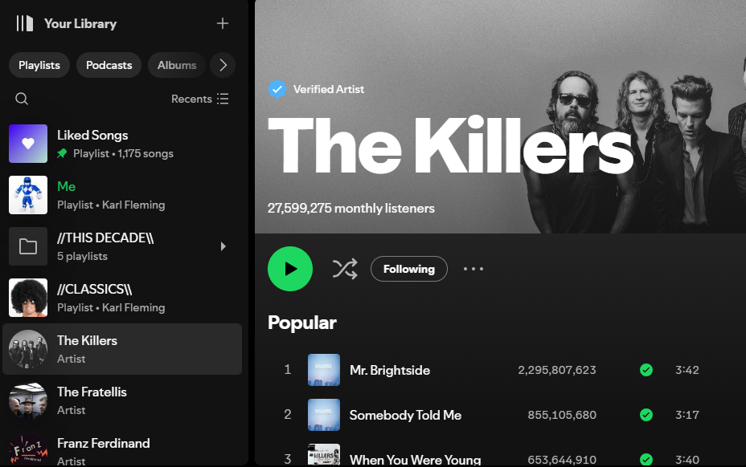

Your Account
Your account is where you can manage your subscription, personal/privacy settings and edit your profile.
You can apply settings for the following
- Payment Options
- Notification Settings
- Privacy Settings
- Profile Options
Your Homepage
On your Homepage you will find your playlists, popular mixes recommended for you, artists and audiobooks we think you might like as well as various kinds of podcasts. You can check out and save any of these to your library if you like them!
Your Library
Your Library is your one stop shop for everything you love. Here you will find your playlists and liked songs as well saved artists, albums and podcasts.
You can create and customise your own playlists how you wish. Make them public or private. Or, just save your friend's playlist if they have better taste. It's your choice.
Artists
Artists are what make Spotify possible so we love to showcase them as best as we can. Check out your favorite bands bio for more info on them. Also see if any tour dates are coming up. Save your favorite artists so you never miss a new tune. Easily access their full discography on Spotify
Albums
Every Album by your favorite artists can be found on Spotify! Check out their Album list and EP's while your at it. Save everything to your library so it can easily be found later. And with Spotify Premium, you'll have no interruptions from start to finish,
Playlists
Your Playlists are fully customisable and can be shared with anyone you like. Share your playlist link with your friends. Invite them to listen along with you. Create colaborative playlists with as many friends as you like!
With premium there is no limitations on playlist control. You can even give your playlist a custom image and description to let people know what kind of music you've cooked up.
Podcasts
As well as music, Spotify offers a wide range of podcasts that premium members get full access to. These podcats and audiobooks can be found on the homepage or searched for in our searchbar. We have the most listened to Podcasts in the world